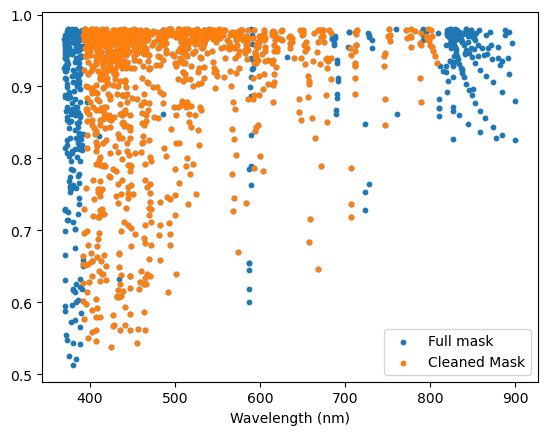

Tutorial on the ExcludeMaskRegion objects
In this tutorial, we go over some details on the usage of the ExcludeMaskRegion objects that can be used to clean mask from specified spectral regions.
Import the necessary packages
[1]:
import specpolFlow as pol
import pandas as pd
import matplotlib.pyplot as plt
The structure of a ExcludeMaskRegion object
TODO: Explain the structure of the object, and the structure of the corresponding file
How to create your own
TODO
How to use the Default functions
TODO
[2]:
reg1 = pol.get_Balmer_regions_default(velrange=100)
pd.DataFrame(reg1.to_dict())
[2]:
| start | stop | type | |
|---|---|---|---|
| 0 | 656.062088 | 656.499912 | Halpha |
| 1 | 485.977841 | 486.302159 | Hbeta |
| 2 | 433.905217 | 434.194783 | Hgamma |
| 3 | 410.033182 | 410.306818 | Hdelta |
| 4 | 396.877572 | 397.142428 | Hepsilon |
| 5 | 360.000000 | 392.000000 | Hjump |
[3]:
reg2 = pol.get_telluric_regions_default()
pd.DataFrame(reg2.to_dict())
[3]:
| start | stop | type | |
|---|---|---|---|
| 0 | 587.5 | 592.0 | telluric |
| 1 | 627.5 | 632.5 | telluric |
| 2 | 686.0 | 705.3 | telluric |
| 3 | 717.0 | 735.0 | telluric |
| 4 | 759.0 | 771.0 | telluric |
| 5 | 790.0 | 795.0 | telluric |
| 6 | 809.0 | 990.0 | telluric |
How to combine multiple ExcludeMaskRegions
TODO
[4]:
concat = reg1+reg2
pd.DataFrame(concat.to_dict())
[4]:
| start | stop | type | |
|---|---|---|---|
| 0 | 656.062088 | 656.499912 | Halpha |
| 1 | 485.977841 | 486.302159 | Hbeta |
| 2 | 433.905217 | 434.194783 | Hgamma |
| 3 | 410.033182 | 410.306818 | Hdelta |
| 4 | 396.877572 | 397.142428 | Hepsilon |
| 5 | 360.000000 | 392.000000 | Hjump |
| 6 | 587.500000 | 592.000000 | telluric |
| 7 | 627.500000 | 632.500000 | telluric |
| 8 | 686.000000 | 705.300000 | telluric |
| 9 | 717.000000 | 735.000000 | telluric |
| 10 | 759.000000 | 771.000000 | telluric |
| 11 | 790.000000 | 795.000000 | telluric |
| 12 | 809.000000 | 990.000000 | telluric |
How to save to file and read from file
TODO
[5]:
concat.save('ExcludeMaskRegions_tutorialfiles/ExcludeMaskRegions.dat')
---------------------------------------------------------------------------
FileNotFoundError Traceback (most recent call last)
Cell In[5], line 1
----> 1 concat.save('ExcludeMaskRegions_tutorialfiles/ExcludeMaskRegions.dat')
File ~/ASTRO/programme/specpolFlow/specpolFlow/mask.py:226, in ExcludeMaskRegions.save(self, fname)
220 def save(self, fname):
221 """
222 Save the ExcludeMaskRegions object to a text file.
223
224 :param fname: the file path/name
225 """
--> 226 with open(fname, 'w') as ofile:
227 for item in self:
228 ofile.write('{:.4f} {:.4f} {}\n'.format(item.start, item.stop,
229 item.type))
FileNotFoundError: [Errno 2] No such file or directory: 'ExcludeMaskRegions_tutorialfiles/ExcludeMaskRegions.dat'
[ ]:
reg = pol.read_exclude_mask_regions('ExcludeMaskRegions_tutorialfiles/ExcludeMaskRegions.dat')
pd.DataFrame(reg.to_dict())
| start | stop | type | |
|---|---|---|---|
| 0 | 656.062088 | 656.499912 | Halpha |
| 1 | 485.977841 | 486.302159 | Hbeta |
| 2 | 433.905217 | 434.194783 | Hgamma |
| 3 | 410.033182 | 410.306818 | Hdelta |
| 4 | 396.877572 | 397.142428 | Hepsilon |
| 5 | 360.000000 | 392.000000 | Hjump |
| 6 | 587.500000 | 592.000000 | telluric |
| 7 | 627.500000 | 632.500000 | telluric |
| 8 | 684.000000 | 705.300000 | telluric |
| 9 | 717.000000 | 735.000000 | telluric |
| 10 | 757.000000 | 771.000000 | telluric |
| 11 | 790.000000 | 795.000000 | telluric |
| 12 | 809.000000 | 990.000000 | telluric |
How to use this ExcludeMaskRegions object to clean a mask
TODO: write some text here
[ ]:
mask = pol.read_mask('ExcludeMaskRegions_tutorialfiles/T27000G35_depth0.02.mask')
fig, ax = plt.subplots(1,1)
ax.scatter(mask.wl, 1-mask.depth, s=10, label='Full mask')
ax.set_xlabel('Wavelength (nm)')
mask_clean = mask.clean(reg).prune()
ax.scatter(mask_clean.wl, 1-mask_clean.depth, s=10, label='Cleaned Mask')
ax.legend(loc=0)
<matplotlib.legend.Legend at 0x7fe42851ecd0>

[ ]:
print(mask_clean.iuse)
[1 1 1 ... 1 1 1]
[ ]: